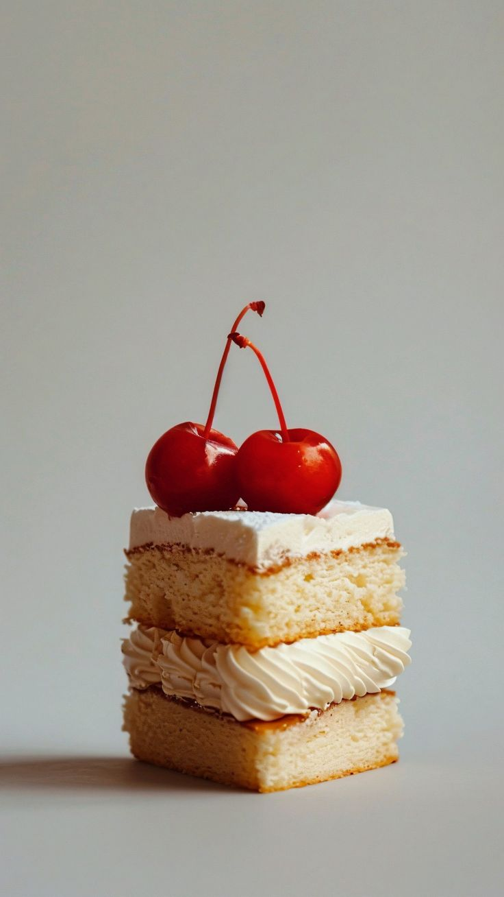

Ven a visitarnos
Estamos en Colima 179, Roma Norte, Ciudad de México. Revisa el mapa para ubicar nuestro punto de encuentro y escríbenos antes de pasar por tu pedido.
HABLEMOS
Cuéntanos qué momento quieres hacer especial.
Podemos ayudarte a elegir piezas para una visita, una mesa de desayuno, un regalo o un pastel por encargo. Escríbenos con tu idea y te orientamos.

@itaca.bakery
Comparte novedades, horneados de la semana y sabores que aparecen por temporada.
Ver novedadesNúmero de demostración: 55 1234 5678. Sustituye este número por el del negocio antes de publicar.
Ideal para confirmar piezas, horarios y detalles de preventa de lunes a sábado.
Escribir por WhatsAppCorreo
hola@itacabakery.com
Úsalo si necesitas cotizar un pastel, un pedido grande o una fecha especial.
Escribir un correoZona de entrega
Roma Norte y alrededores.
Indícanos tu colonia para revisar la ruta y el horario disponible de esa semana.
Revisar horariosHorarios de atención
| Día | Actividad |
|---|---|
| Lunes a miércoles | Preventas abiertas |
| Jueves | Confirmación de pedidos |
| Viernes y sábado | Entregas y recolecciones |
| Domingo | Cerrado |
Preguntas frecuentes
¿Con cuánta anticipación debo hacer mi pedido?
Para panes y piezas individuales, recomendamos escribirnos entre lunes y miércoles. Los pasteles y pedidos grandes necesitan más tiempo.
¿Puedo cambiar o cancelar mi pedido?
Escríbenos lo antes posible. Revisaremos el estado de tu pedido y te diremos qué cambios todavía podemos hacer.
¿Los sabores cambian cada semana?
Sí. Mantenemos algunos favoritos y agregamos rellenos, frutas o bebidas de temporada cuando están disponibles.
¿Pueden preparar una caja para regalo?
Sí, cuéntanos cuántas personas recibirán el regalo y te sugerimos una combinación de panes, croissants o postres.
¿Hacen pasteles para celebraciones?
Sí. Indícanos la fecha, el número aproximado de personas y el estilo de pastel que buscas.
Elige la mejor forma de hablar con nosotros
Instagram es el mejor lugar para conocer los sabores de la semana, ver los horneados recientes y guardar ideas para tu siguiente pedido.
WhatsApp es práctico para confirmar cantidades, punto de entrega y hora de recolección una vez que ya elegiste tus piezas.
Usa el formulario o el correo si buscas orientación, quieres cotizar un pastel o planeas un pedido para varias personas.
Envíanos un mensaje
Elige el medio que más te convenga
Úsalo para conocer novedades, piezas recién horneadas e ideas de temporada.
Es práctico para confirmar cantidades, horarios y el punto de entrega.
Correo
Escríbenos para cotizar un pastel o un pedido para varias personas.
Qué medio usar según tu consulta
Ver novedades
Instagram es ideal para descubrir el menú de la semana y nuevas piezas horneadas.
Confirmar un pedido
WhatsApp funciona mejor para revisar cantidades, horario y punto de entrega.
Cotizar un pastel
Usa el correo o el formulario si necesitas explicar una fecha, tamaño o idea especial.
Resolver una duda
Consulta los horarios y preguntas frecuentes antes de enviarnos un mensaje.
Horarios de atención
Dos vías rápidas para escribirnos
Hablemos de tu próximo antojo
El pan recién horneado invita a compartir. Cuéntanos qué te gustaría pedir y te ayudamos a elegir.